| 日付 | 2026年8月30日（日） |
|---|---|
| 山域 | 奥多摩 |
| メンバー | 単独 |
| 山行形態 | 日帰り |
| アクセス | 車 |
| ルート (Map) | 栃寄観光用駐車場 (8:22) - (8:48) P810 - (9:29) シダクラ沢出合 - (12:36) 稜線 - (12:59) 惣岳山 - (13:14) 御前山 (13:27) - (14:20) 林道 - (14:35) 栃寄観光用駐車場 |
今週末はサークル山行で不帰キレットに行く予定だったが雨で流れてしまった。
あまり天気は良くないが日曜は山に行けそうだったため、沢に行くことにする。
目的地はシダクラ沢。奥多摩にある初心者向けの沢だ。
栃寄観光用駐車場に車を停める。標高620m。
停まっていた車は一台で、ガラガラの駐車場だ。
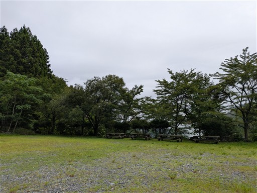
一応、登山者用の駐車場らしい。
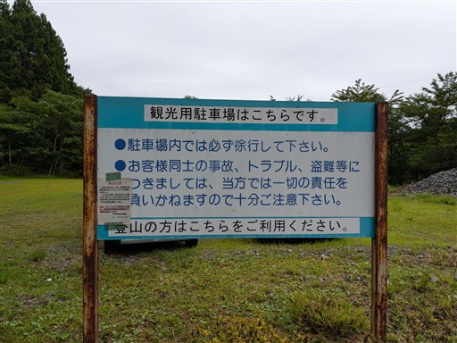
本日は曇り予報。雨がパラつく可能性もある。
車で来る途中は結構降っている場所もあった。
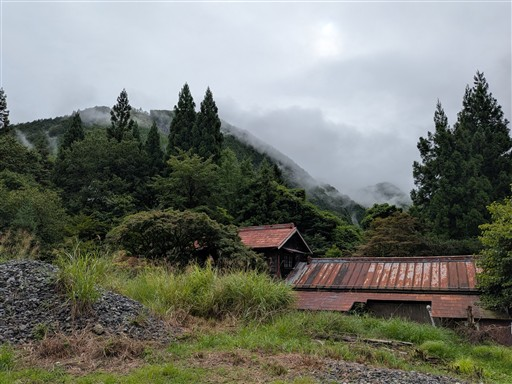
駐車場の側にある栃寄森の家。
山奥なのだがきれいに整備されていて、観光客も来ている。
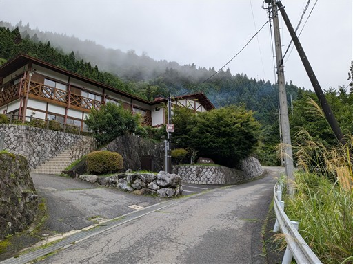
シダクラ沢の入口へは、多摩川に注ぐところまで下る必要がある。
車道を下るのか、適当な尾根を下るのか、悩むところだが、
距離が短い後者を選択する。この階段から山に入って行く。
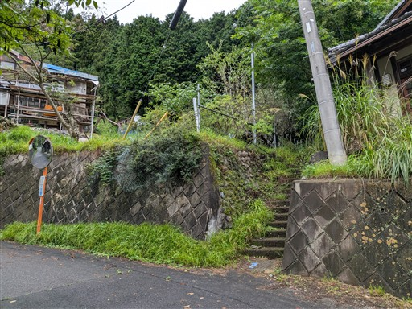
この辺りは作業道がある。
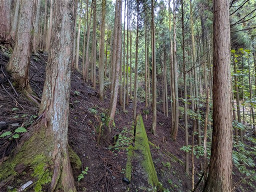
なんと鳥居が現れる。
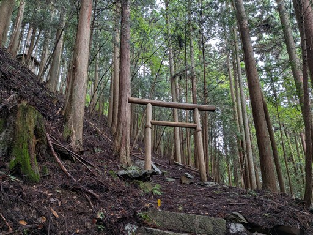
神社。なんという神社なのだろう？どの地図を見ても表記がない。
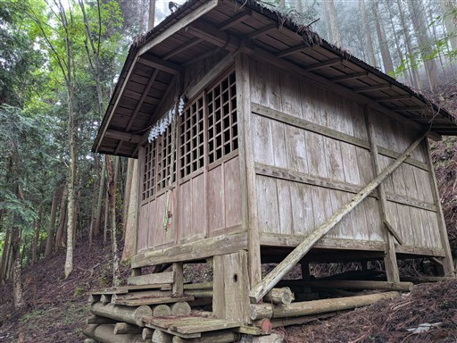
ここからは尾根を登っていく。
斜面をトラバースする方が効率的なのだが、安全重視で尾根を行く。
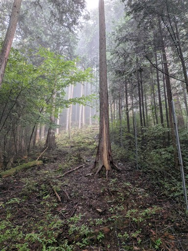
810mピークと思われる場所に到着。
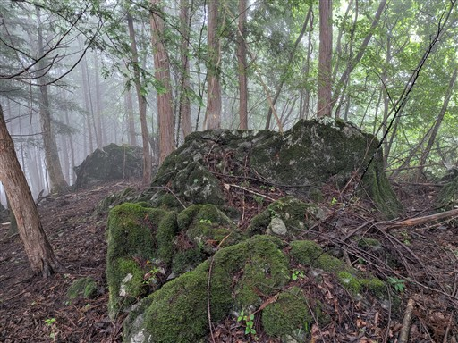
ここから北北東に伸びる尾根を下っていく。周囲はずっと植林地帯。
当たり前だが完全なバリエーションルートだ。
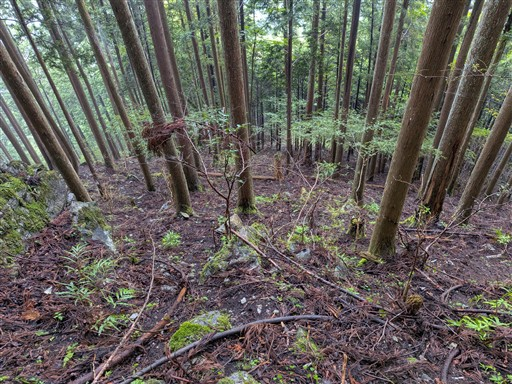
下界に着いたと思ったら鉄塔だった。
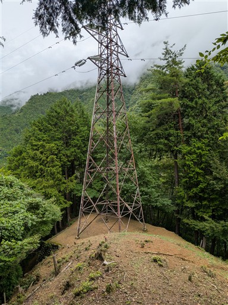
山の中腹に集落が見える。遠くから見ると天空の村、という感じだ。
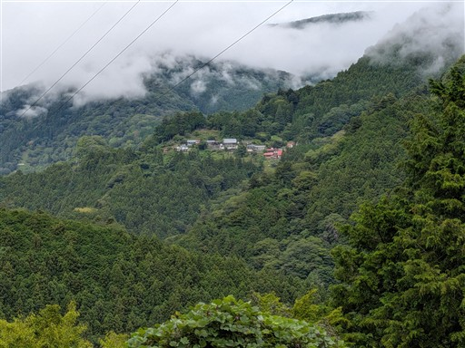
尾根の末端はかなりの急傾斜。
ロープが設置されている。
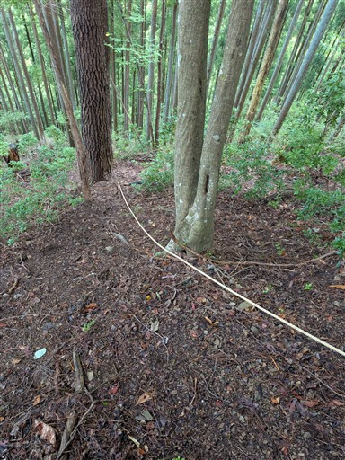
シダクラ沢が多摩川に注ぐ場所まで下ってくる。
駐車場から1時間強。はたして車道歩きとどちらが早かったのか？
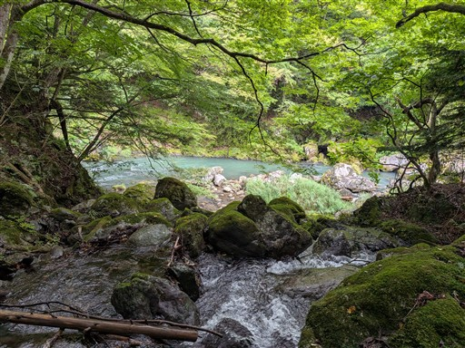
さっそく川に入る。本日は気温が低く、ちょっと寒い。
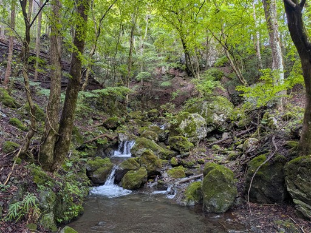
早速、登れなさそうな滝が出てきたので巻く。
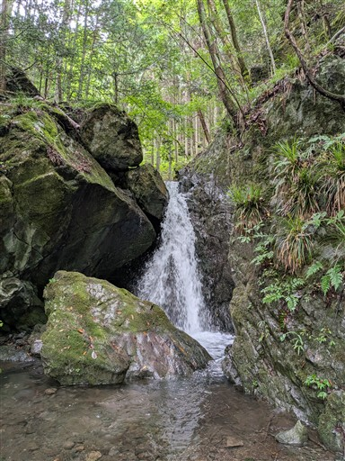
小さい沢だが、それなりに流れが速い。昨日の小雨の影響だろうか？
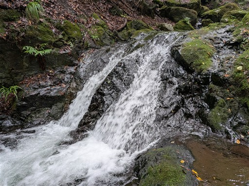
この滝も巻く。上部に構造物が見えるので、完全に自然の滝ではなさそう。
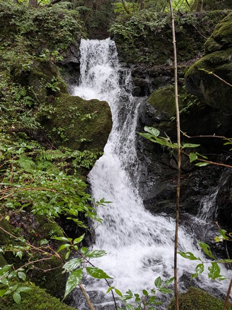
この辺りからちゃんと登れるようになってくる。
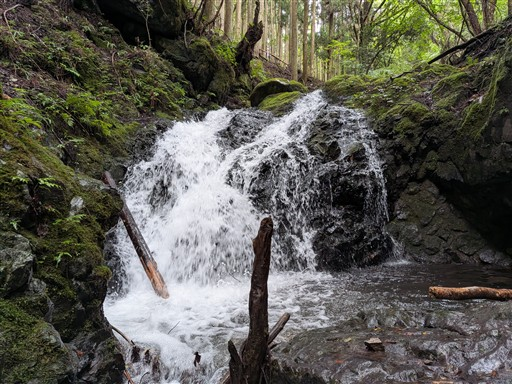
突如現れる構造物。水の近くにある構造物ってなんか苦手。
不気味というか、危険な香りがする。
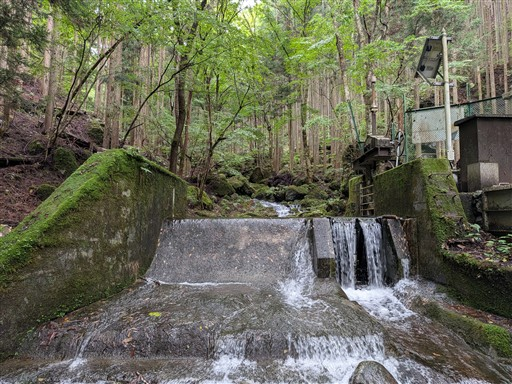
小さな二筋の滝。
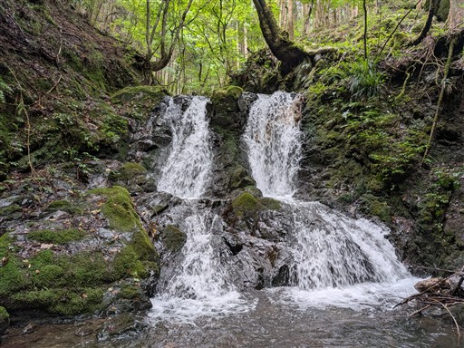
小滝が連続する。
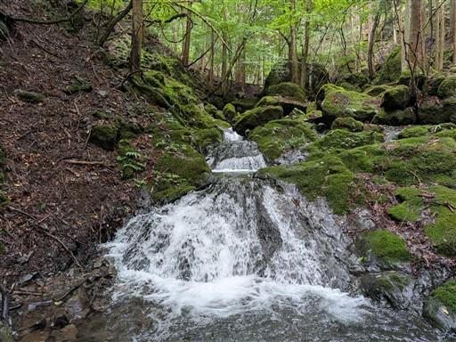
ちょっと沢が狭い場所を通過。
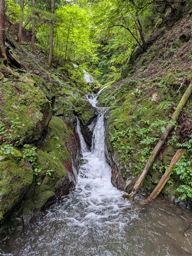
ずっとこのような小さな滝が連続する。
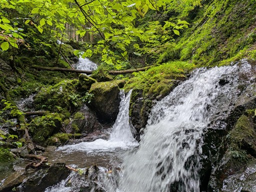
大きめの滝。傾斜は緩いので難易度は高くない。左から突破。
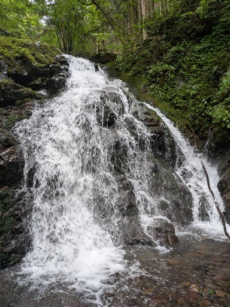
上から見るとなかなかの高度感。
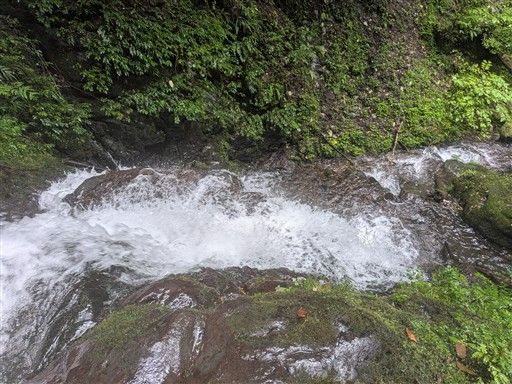
次なる滝。こちらは右から。
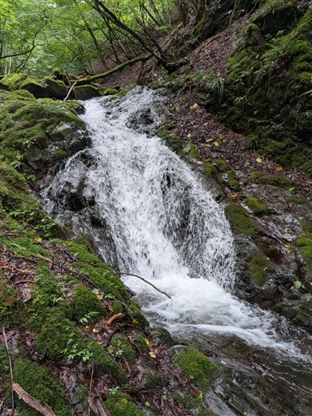
この滝は小さいが一番難しかった。
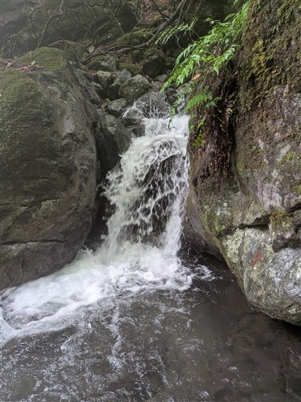
次々と現れる滝。難易度は高くは無いのだがずっと緊張を強いられる。
フリーソロの宿命か。
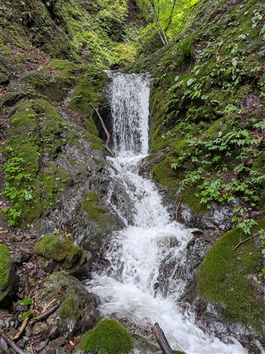
この沢はあまりヌメリがない。ガバも多いので登りやすい。
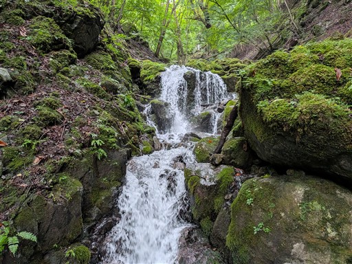
沢の中に立つ一際大きな木。
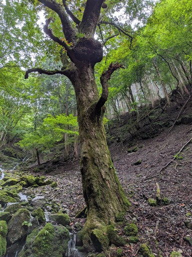
二俣。苔生した世界。
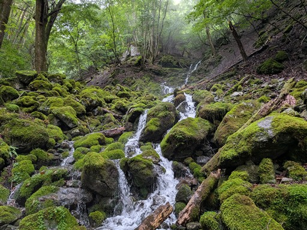
階段状の滝。だいぶ水量が減ってきた。
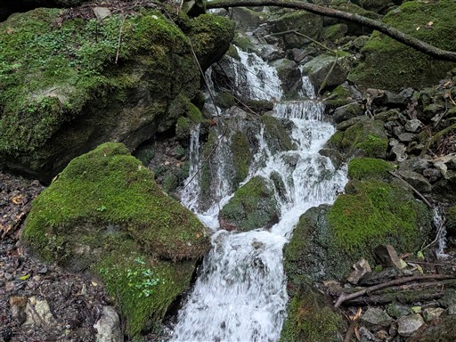
ここで突然、水が枯れる。
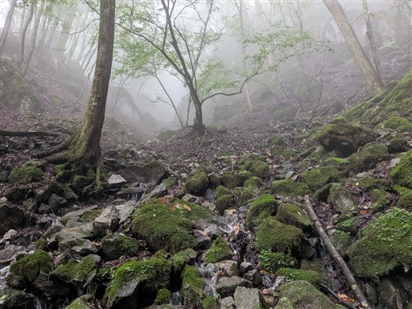
ここからのルートは人に寄るのだが、斜面を登って左の尾根に乗る。
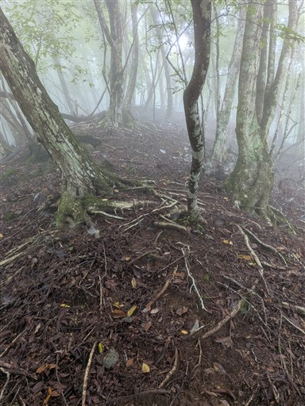
あとは尾根を登っていくと、稜線が見えてくる。
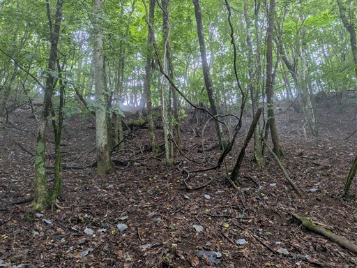
稜線に到達。登山道に合流だ。小河内ダムは通行禁止で、
この道を歩く人はいないと思っていたのだが、登山者を見かけてビックリ。
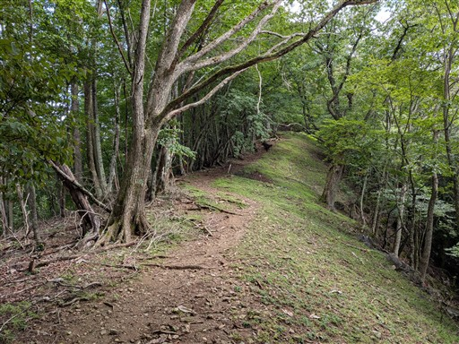
少し日が差してくる。
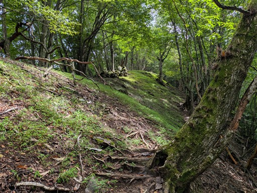
昔、家族で登ったときに息子が遊んでいた岩。8年振りだ。
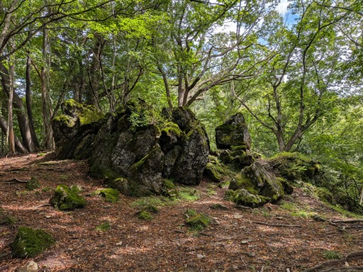
まだ緑色のクリが落ちている。強風で落とされたのだろうか？
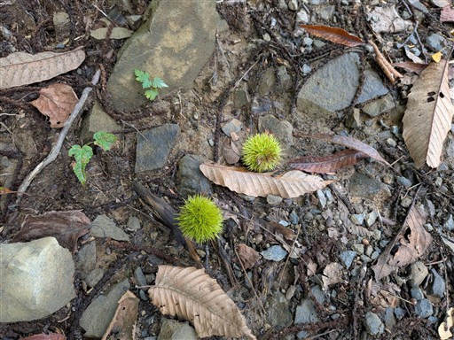
惣岳山に到着。休憩しようと思ったが、スズメバチがしつこく追ってくるためそのまま通過。
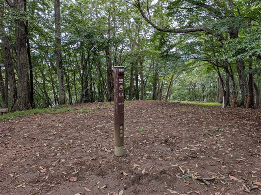
整備された道は歩きやすい。
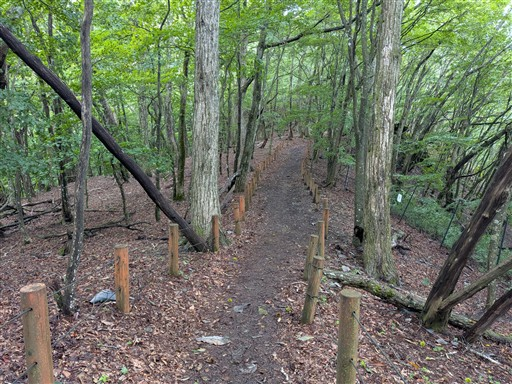
巨大なキノコ。かなり存在感がある。
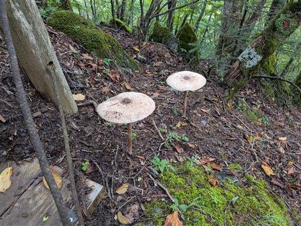
山頂直下の展望台。なんと富士山が見えている。
この展望なら本日は富士山登山もありだったかも。
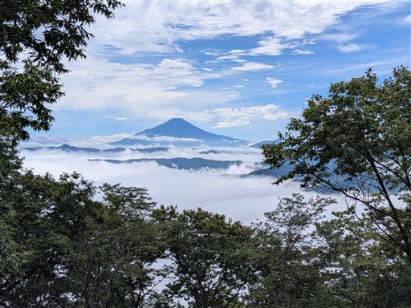
御前山に到着。標高1405m。
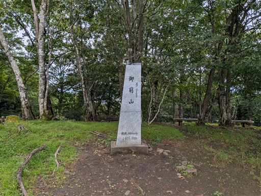
山頂の様子。他にも登山者がいるのは、さすが奥多摩だ。
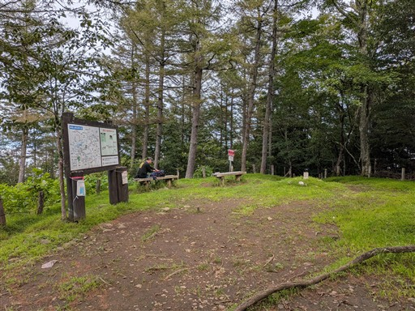
山頂からの展望。先ほどの富士山といい、昔は広がらなかった展望だ。
木が伐採されたのだろう。
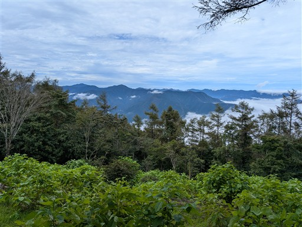
滝雲が見えている。長沢背稜の尾根だろうか？
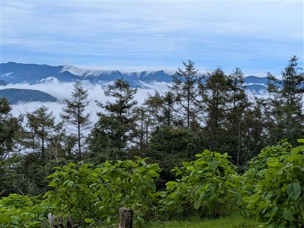
下山道は元来た道を少し戻ってから都民の森に下る道を歩く。
栃寄ノ大滝を経由するルートの方が一般的だが、以前そちらを歩いたので。
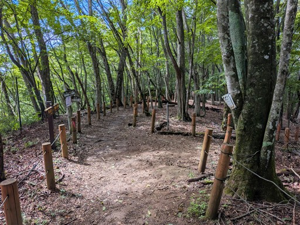
最初は沢沿いの道。
この辺りは登山道がたくさんあり、道が複雑だ。
日が差しているが雲のなかに突入。
ちょっと幻想的な景色。
小さな石仏。かなり古そうだ。
完全に雲に覆われる。
無事下山。
あとは車道を歩いて駐車場に戻る。
シダクラ沢はどの滝も登りやすく、今シーズンで一番技術的に余裕のある沢だった。
それでも寒かったからか滝が連続したからか、結構長く感じた遡行だった。